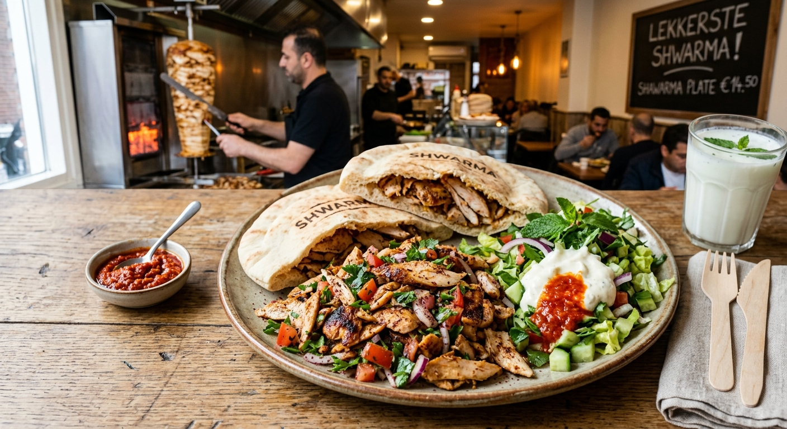

Gemaakt door Chef Marcus Vance
Meng de geperste knoflook, sumak, komijn, olijfolie en Griekse yoghurt in een grote kom.
Meng de sesampasta met vers muntsap en koud water. Klop stevig tot de saus helder turquoise kleurt.
Verhit een zware gietijzeren pan op hoog vuur. Bak de gemarineerde stukjes 6-8 minuten tot de randen krokant zijn.
Bak de platbroden 30 seconden op de grill. Beleg ze met de vulling, knapperige radijs en munttahinisaus.